Префектура Гумма · Маэбаси · арт-отель
Shiroiya Hotel в Маэбаси: старый рёкан, ставший арт-отелем, кондитерской и рестораном кухни Гуммы
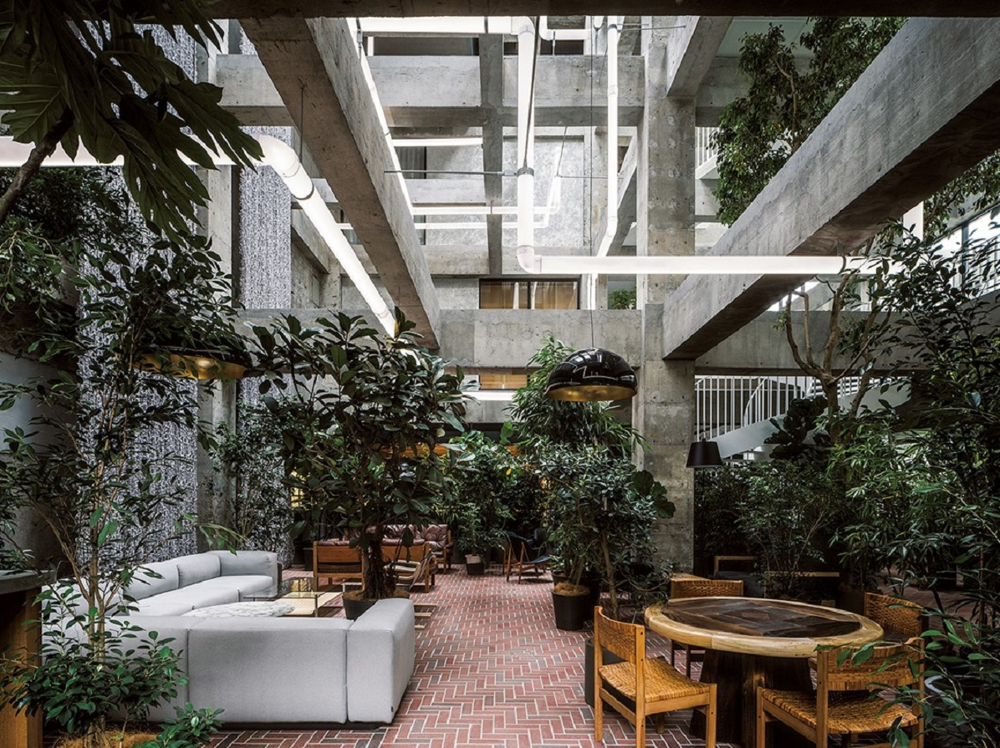
Около трёхсот лет на этом месте в центре Маэбаси стоял рёкан «Сироия», а в 2008 году он закрылся. В декабре 2020 года здесь открылся Shiroiya Hotel: отель, ради которого в главный город префектуры Гумма едут смотреть архитектуру, искусство и ужинать.
История
Рёкан, который не дали снести
Маэбаси, главный город префектуры Гумма, когда-то разбогател на шёлке и был одним из первых промышленных центров Японии. Рёкан «Сироия» открылся здесь ещё в эпоху Эдо. В нём останавливались люди из императорского двора, писатель Огай Мори (1862–1922), один из классиков японской литературы конца XIX века, и генерал Марэсукэ Ноги (1849–1912), герой Русско-японской войны. В 1975 году деревянное здание сменил бетонный корпус гостиницы, но центр города пустел, и в 2008 году «Сироия» закрылся.
Здание стояло под угрозой сноса, когда в 2014 году за него взялся фонд, который ведёт программу оживления центра Маэбаси. Его основатель, создатель сети магазинов очков JINS, сам родом из этого города. В 2016 году город вместе с местным бизнесом объявил программу «Мэбуку» («прорастать»), и в пустом центре стали понемногу открываться магазины и кафе. Об этих местах рассказывает отдельная статья об улице Маэбаси-Тюо.
Общий проект отеля сделал архитектор Сосукэ Фудзимото, работа заняла шесть с половиной лет. Shiroiya Hotel открылся 12 декабря 2020 года.
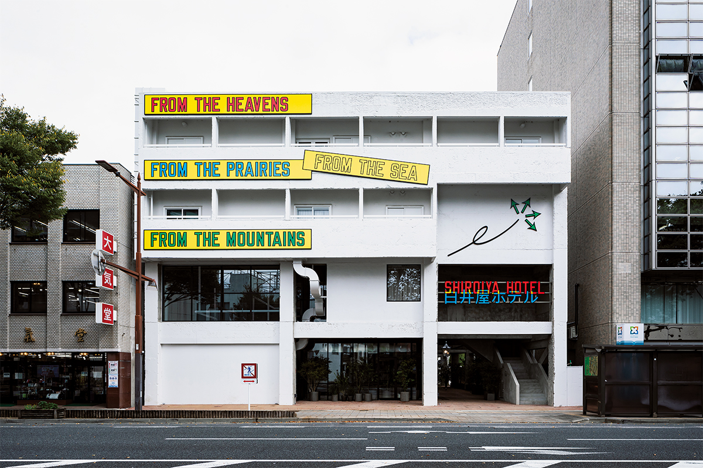
Архитектура
Две башни: бетон и холм
Отель состоит из двух корпусов. Heritage Tower это старая гостиница 1975 года, у которой Фудзимото оставил только колонны и балки. Внутри открылся атриум высотой в четыре этажа, и между голыми балками тянутся светящиеся трубы: это инсталляция «Lighting Pipes» аргентинского художника Леандро Эрлиха. Внизу работает лаунж the LOUNGE, куда можно зайти и без проживания.
Второй корпус, Green Tower, построен заново. Он изображает травяную насыпь вдоль старого русла, по которому когда-то текла протока реки Тонэ. По склонам холма поднимаются дорожки, а на вершинах стоят маленькие белые домики. В одном из них установлена работа Тацуо Миядзимы, которая светится по ночам.
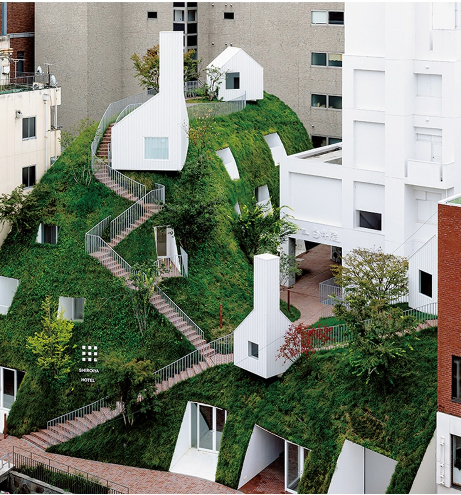
Искусство здесь повсюду. За стойкой регистрации висит фотография озера из серии «Морские пейзажи» Хироси Сугимото, которую он выбрал сам. В обычных номерах выставлены работы художников, живущих в Гумме, и авторов, известных за границей, и двух одинаковых комнат в отеле нет.
Номера
Четыре комнаты-инсталляции
Из 25 номеров четыре особые: интерьер каждого придумал известный архитектор или художник. Номер Сосукэ Фудзимото белый и простой, но из мебели, которую тоже сделал архитектор, растут живые ветки фикуса. Ткани для всего отеля, от штор до обоев, создала японская дизайнер текстиля.
Номер Джаспера Моррисона вырос из идеи деревянного ящика: украшений нет, а стулья, столы, светильники и даже мусорная корзина взяты из работ лондонского дизайнера. Ванну из кипариса хиноки он придумал специально для этой комнаты.
Итальянский архитектор Микеле Де Лукки покрыл свой номер 2725 деревянными дощечками, как кровлю из щепы. Получилась комната, в которой гость живёт внутри инсталляции. Табурет здесь тоже его работы.
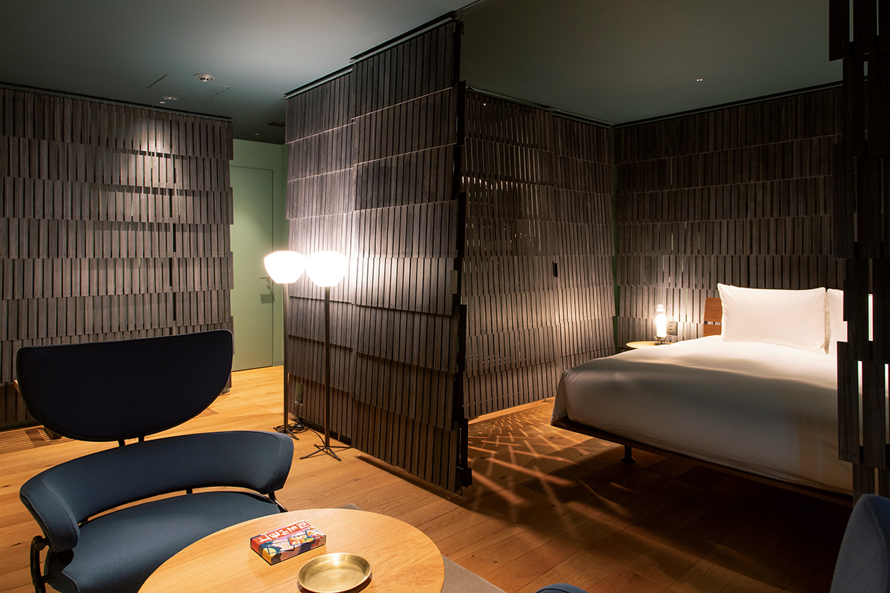
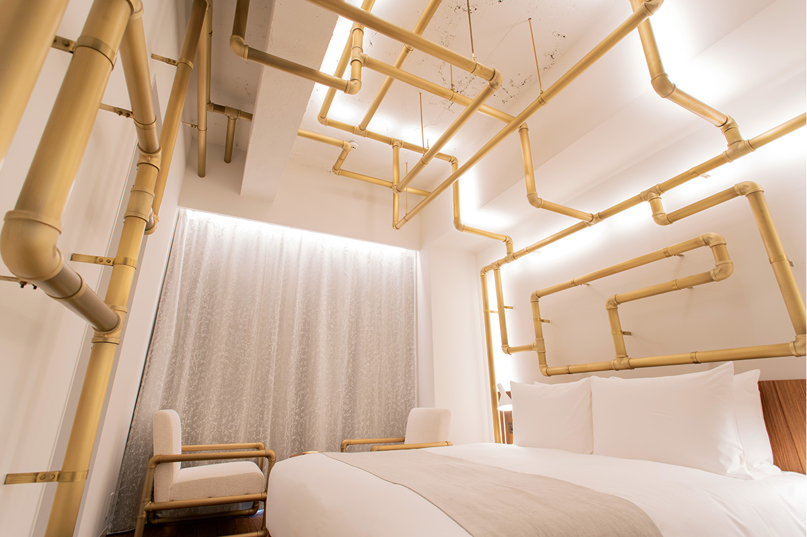
Для Леандро Эрлиха это первое «произведение, в котором можно ночевать». Трубы его инсталляции из атриума переходят в номер и повторяются даже в стаканах и других мелочах. В номерах есть и мелочи с характером: полотенца «Имабари», халаты на заказ, бамбуковые зубные щётки и «Дзёмо-карута», настольная игра в карточки, которую знает каждый житель Гуммы: в её стихах история, природа и знаменитые люди префектуры.
Маттятэй
Зелёный зал Хироси Сугимото
В январе 2021 года в Green Tower появилось ещё одно произведение: зал «Маттятэй» для частных ужинов и мероприятий. Его сделала мастерская New Material Research Laboratory, которую в 2008 году основали фотограф и художник Хироси Сугимото и архитектор, его партнёр. Мастерская изучает материалы и приёмы древности и Средних веков и так сохраняет ремесло мастеров, которое забывается в эпоху стандартных материалов.
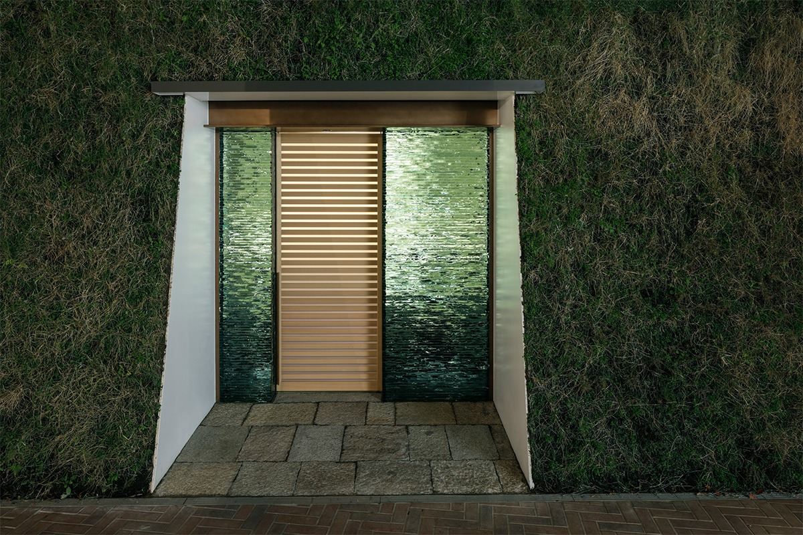
Фасад сложен из более чем ста листов стекла толщиной 19 мм. Стекольщик вручную обломал кромку каждого листа, а потом их уложили один на другой, подбирая рисунок сколов. Свет проходит сквозь такую стену мягко, и днём зал выглядит иначе, чем вечером.
Название значит «зал настоящего цвета маття» и взято от цвета глиняной стены, которую штукатуры покрыли смесью пигментов: она перекликается с зеленью вокруг отеля и с зелёными стенами чайной комнаты в глубине зала. Эту комнату, «Сюнгэцу», перенесли сюда из старого рёкана: её любила последняя хозяйка «Сироия». Вывеску с названием написал сам Сугимото.
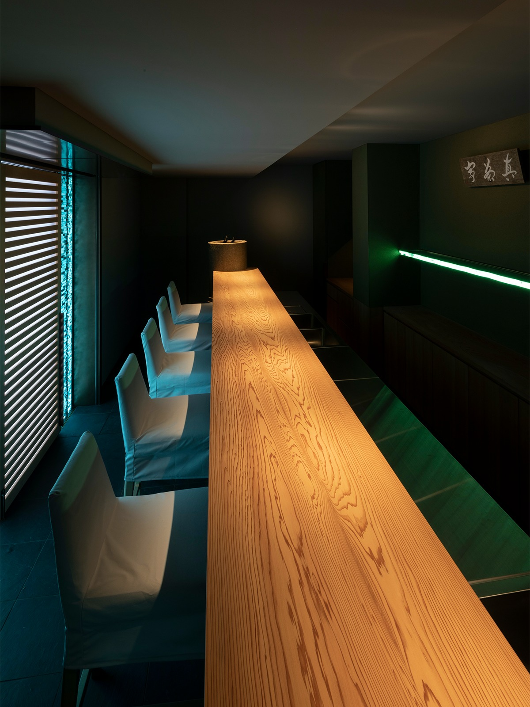
Стойку из цельной криптомерии выбирали по рисунку волокон: они должны были продолжать круги на воде от каменной чаши для омовения, которую поставили рядом как ведёрко для бутылок. Зал работает только по предварительной записи.
Сладости
Тарты и хлеб на улице Бабагава
В феврале 2021 года на территории отеля, со стороны улицы Бабагава, открылась кондитерская SHIROIYA the PÂTISSERIE, первая в Маэбаси, где делают только фруктовые тарты. Рецепты разработала кондитер токийского ресторана десертов EMME, которая училась у мастеров в Париже. Для каждого фрукта тесто и крем подбирают отдельно.
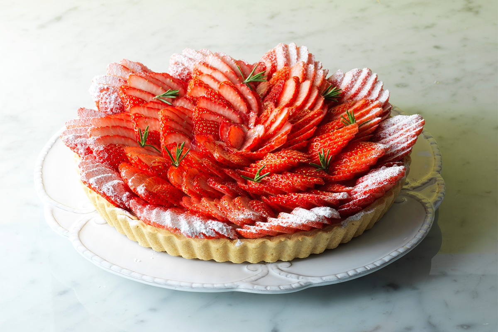
Главный тарт сделан с клубникой «Яёихимэ» из Гуммы. Под ней лёгкий, не слишком сладкий заварной крем с ванилью и рассыпчатое тесто с едва заметной солью, так что вкус ягоды выходит на первый план. Кроме фруктовых тартов здесь пекут монблан с каштанами и чаем ходзитя, шоколадный мусс, чизкейк с фисташкой и травами и шесть видов выпечки: мадлены, финансье, флорентины, сырное печенье и два кекса. В 2021 году мадлена стоила 200 иен, финансье 220 иен без налога.
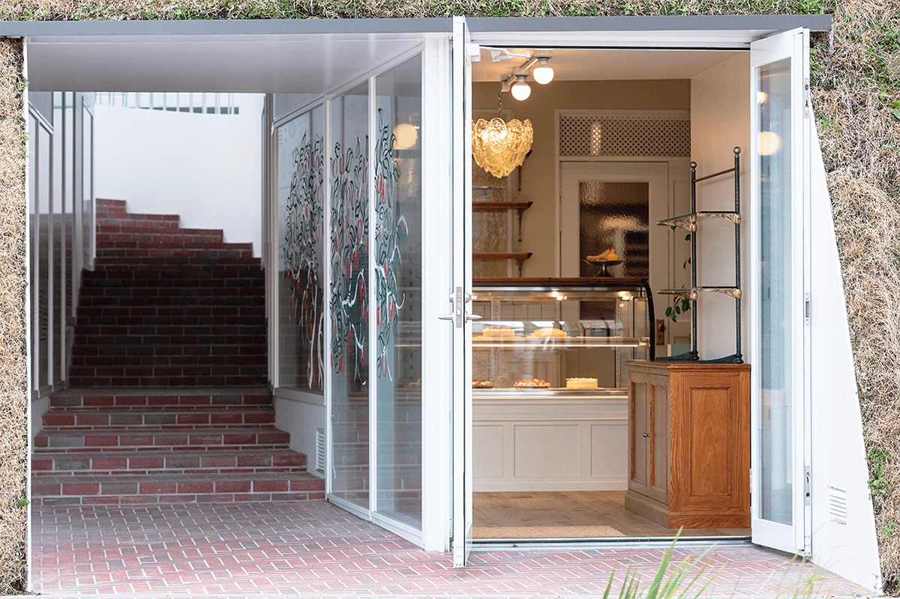
Помещение похоже на пещеру в холме Green Tower. Внутри жёлтая кухня, люстра из муранского стекла, фисташковые полки и молочные стены, а на стекле художница нарисовала яблоню и фрукты: пусть они «пустят корни в Маэбаси». Коробки для подарков украшены её же рисунками. Тарты можно взять с собой или съесть в the LOUNGE.
В сентябре 2021 года рядом открылось кафе Blue Bottle Coffee, а в ноябре того же года пекарня SHIROIYA the BAKERY. Её запускал пекарь, выросший в Гумме, основатель популярной токийской булочной BEAVER BREAD, а интерьер сделал дизайнер, работающий в Осаке и во Франции. Хлеб, от багетов до сладких булочек, пекут в печи прямо в магазине. Так на улице Бабагава встали рядом три заведения отеля.
SHIROIYA the PÂTISSERIE
- Адрес
- префектура Гумма, Маэбаси, Хонмати, 2-2-15, Shiroiya Hotel (вдоль улицы Бабагава)
- Телефон
- +81 27-231-2020
- Часы работы
- 10:00–18:00
- Выходные
- понедельник (если понедельник праздник, то вторник)
- Сайт
- shiroiya.com
Ресторан
the RESTAURANT: кухня Гуммы на французский лад
Главный ресторан отеля, the RESTAURANT, находится за стойкой регистрации в Heritage Tower. Это 14 мест вокруг открытой кухни в форме буквы «П». Меню курирует Хироясу Каватэ, шеф токийского ресторана Florilège с двумя звёздами Michelin, а у плиты стоит Хиро Катаяма, уроженец Такасаки. Ради этого проекта он закрыл свой ресторан, год готовил на кухне Florilège и ещё год стажировался в пяти ресторанах Японии и четырёх за границей.
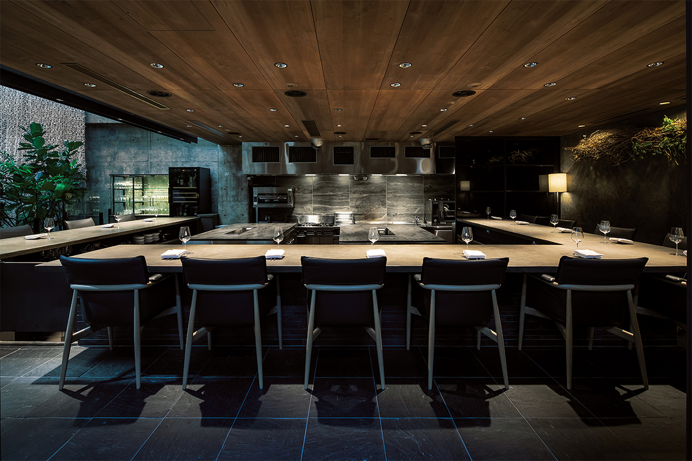
Свою кухню Катаяма называет «Дзёсю-кюизин», по старому имени Гуммы. Больше 90% продуктов местные, а приёмы французские. Один продукт он показывает в нескольких видах, а домашние блюда Гуммы собирает заново. Меню меняют четыре раза в год. Ужин начинается с консоме из говядины «Акаги» и местной курицы, и в него добавляют только аромат сезона: юдзу зимой, горные травы весной, лемонграсс в начале лета, грибы мацутакэ осенью.
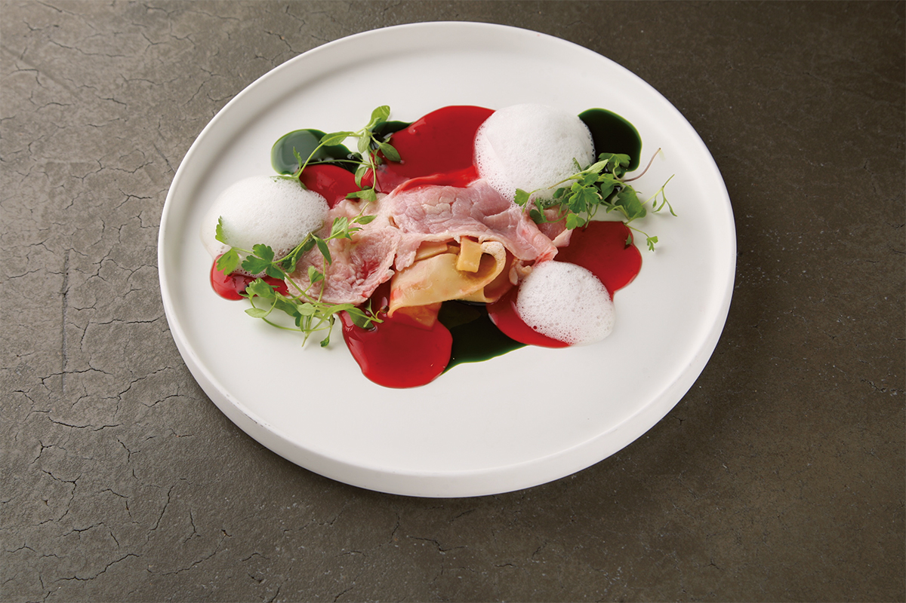
«Окирикоми», густой суп с широкой лапшой, варят в каждом доме Гуммы. Когда блюдо с таким названием приносят в цветных соусах, местные гости смотрят на него с недоверием, а когда им объясняют, как оно устроено, начинают улыбаться. Так же переделан суп «суйтон» с клёцками: здесь их делают из горного ямса и подают с соусом из сыра маленькой сыроварни Маэбаси. «Эби-дайкон», речные креветки с редькой из небольшого городка на юго-востоке Гуммы, превращается в тартар из креветок, завёрнутый в тонкую редьку, с биском и острым маслом.
Гумма не выходит к морю, но морскую камбалу здесь выращивают на фермах. «Маэбаси хирамэ» привозят в ресторан живой: из неё делают мусс и складывают слоями с весенней капустой. Подают и угря с «тагутиной», старинной зеленью, которую когда-то поднесли императору Мэйдзи (1852–1912), и он похвалил её вкус, и салат из горных трав, за которыми шеф в сезон сам ходит в горы. Овощи он выбирает прямо на грядках фермы в Маэбаси, где выращивают около ста сортов.
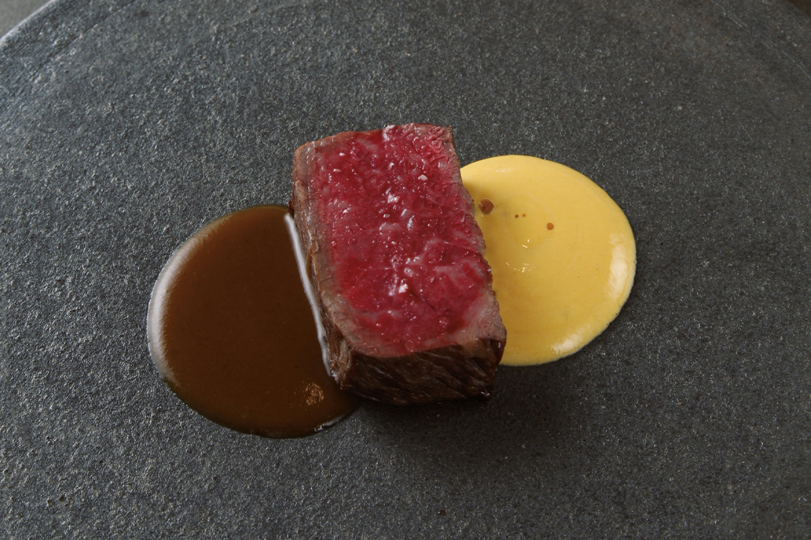
Главное мясное блюдо это говядина «Акаги», а к концу ужина подают десерт из яблока «Гумма мэйгэцу» и «дайфуку» с клубникой «Яёихимэ», в котором спрятано мороженое в моти, любимое в Гумме лакомство. В 2022 году ужин из 10 блюд стоил 13 500 иен, обед из 7 блюд по выходным 7000 иен, а сопровождение из шести бокалов 7500 иен; один из бокалов всегда японское сакэ из Гуммы, например MIZUBASHO. Для тех, кто приехал за рулём, есть безалкогольные напитки.
Shiroiya Hotel the RESTAURANT
- Адрес
- префектура Гумма, Маэбаси, Хонмати, 2-2-15, Shiroiya Hotel, Heritage Tower, 1-й этаж
- Телефон
- +81 27-231-4618
- Часы работы
- обед только в субботу, воскресенье и праздники 12:00–13:30 (последний вход), ужин 17:30–19:30 (последний вход)
- Выходные
- без выходных
- Цены / Вход
- только по предварительной записи, есть пакеты с проживанием
- Сайт
- shiroiya.com
Как добраться
Отель в центре города
От станции JR Маэбаси до отеля около 15 минут пешком, из Токио на синкансэне около полутора часов, на машине около двух. До горячих источников и природы гор Акаги и Харуна от отеля 30–60 минут на машине. В 2020 году номер на двоих стоил от 18 150 иен с человека за ночь без налога и сервисного сбора.
Shiroiya Hotel
- Адрес
- префектура Гумма, Маэбаси, Хонмати, 2-2-15
- Телефон
- +81 27-231-4618
- Номера
- 25
- Цены / Вход
- от 18 150 иен с человека за ночь при двоих в номере, без налога и сервисного сбора
- Как добраться
- около 15 минут пешком от станции JR Маэбаси
- Сайт
- shiroiya.com
Фото: Кацумаса Танака, Синъя Кигурэ, Кадзуя Хаяси, Кэнта Ёсидзава, Мунэаки Маэда, Хироси Сугимото.